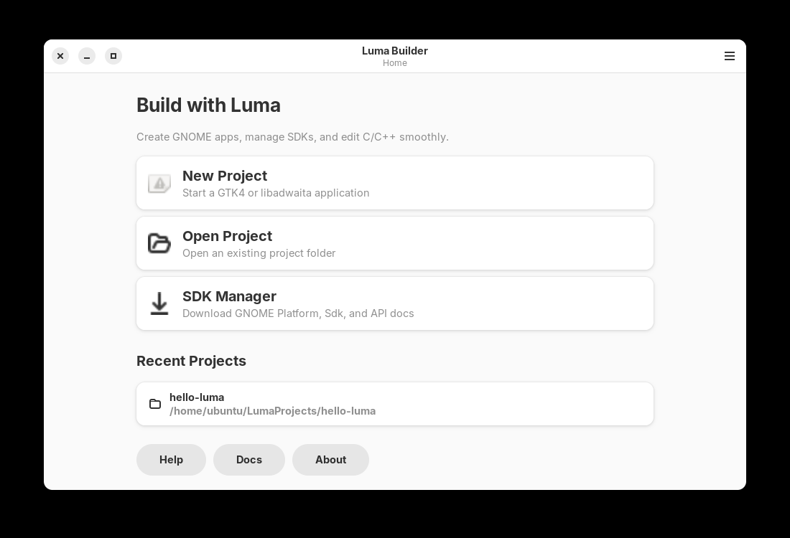
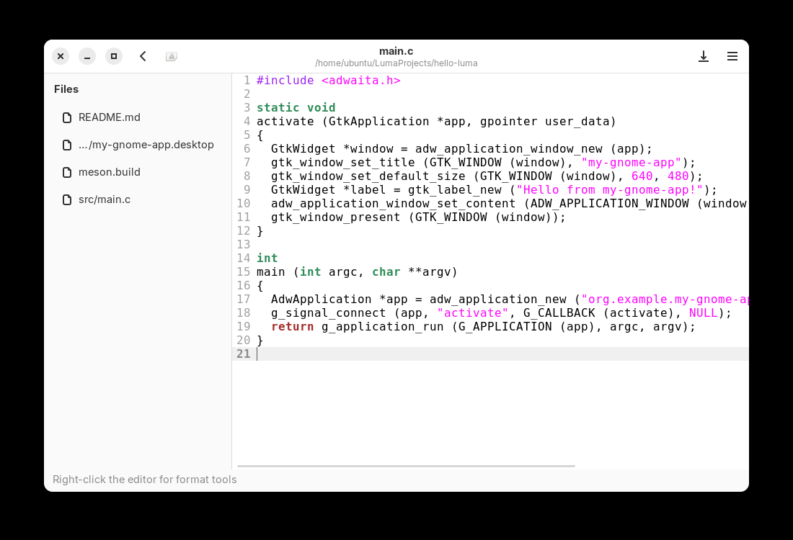
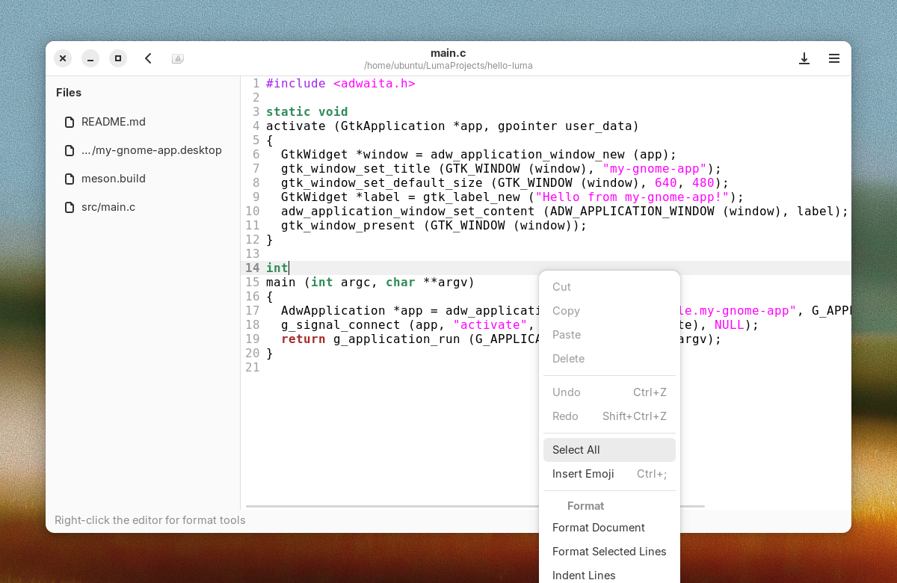
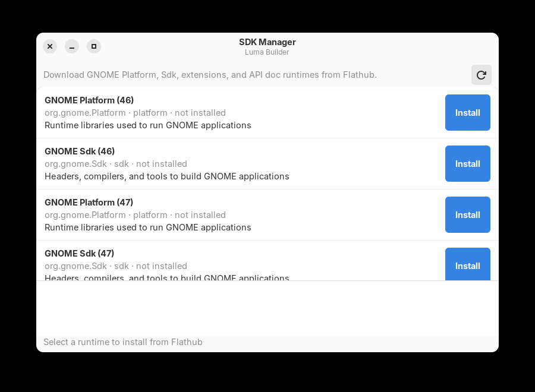
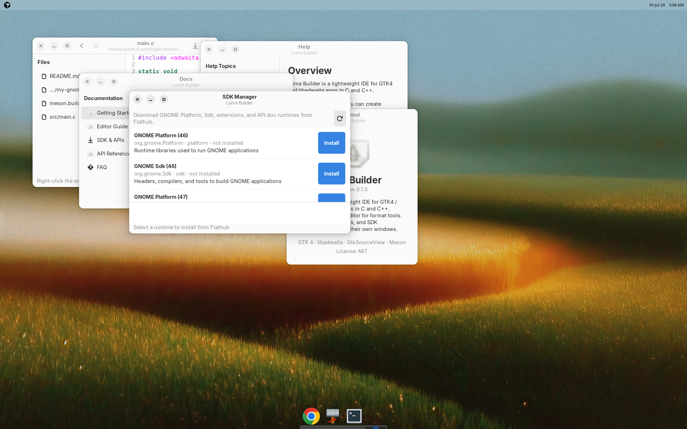

Luma Builder
Build GNOME apps
in the light.
A focused GTK4 / libadwaita IDE — starter templates, meson Build & Run, and GitHub auto-updates for Linux.

Everything you need to start
From empty folder to running window without fighting the toolchain.
- 36 project templates GNOME, GTK, editor, console, CMake, and Python / PyGObject starters.
-
Build & Run
Meson compile for C/C++, and Python projects launch with
python3. - Editor tools File tree, format / indent / comment from the right-click menu.
- Auto-updater Checks GitHub releases and installs .deb, .rpm, or portable .tar.gz.
Downloads
Latest release v0.3.3 — pick the package for your distro. Checksums ship with every release.
Debian / Ubuntu
luma-builder_0.3.3_amd64.deb
Download .deb
Fedora / RHEL-like
luma-builder-0.3.3-2.x86_64.rpm
Download .rpm
Portable
luma-builder-0.3.3-linux-amd64.tar.gz
Download .tar.gz
# Debian / Ubuntu
sudo apt install ./luma-builder_0.3.3_amd64.deb
# Fedora
sudo dnf install ./luma-builder-0.3.3-2.x86_64.rpm
# Portable
tar xf luma-builder-0.3.3-linux-amd64.tar.gz
./luma-builder-0.3.3-linux-amd64/run-luma-builder.shInside Luma
Homescreen, editor, tools, and companion windows.



